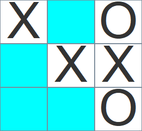

Tic Tac Toe en Java
Voir plusDéveloppement - Java
Morpion en Java
Concept
Découvrez le Morpion Java, un jeu classique recréé avec passion!
Le Morpion Java est un projet que j'ai développé pour explorer les concepts fondamentaux de la programmation orientée objet en utilisant le langage Java. Ce jeu intemporel est implémenté selon le modèle MVC (Modèle-Vue-Contrôleur), offrant une architecture robuste qui sépare la logique métier, l'interface utilisateur et le contrôle des interactions.
Langages Utilisés
Le jeu a été entièrement développé en Java, tirant parti de ses fonctionnalités orientées objet pour créer une structure modulaire et extensible. Cette approche a facilité la gestion du modèle de données, la représentation graphique du jeu, et la gestion des interactions avec les joueurs.
Fonctionnalités Principales
Interface Graphique Intuitive :
La vue du Morpion a été conçue avec une interface graphique intuitive permettant aux joueurs de placer leurs marques (X ou O) sur un tableau 3x3.
Modèle MVC pour la Structure :
Le modèle MVC a été adopté pour structurer le code de manière claire et maintenable. Le modèle gère la logique du jeu, la vue affiche l'interface utilisateur, et le contrôleur gère les actions des joueurs.
Validation des Coups et Détection de Gagnant :
Le contrôleur vérifie la validité des coups joués par les utilisateurs, tandis que le modèle détecte automatiquement si l'un des joueurs a remporté la partie.
Interaction Dynamique
Le contrôleur réagit aux actions des joueurs en utilisant des événements ActionListener. Chaque coup est validé, et le jeu informe les joueurs en cas de victoire ou d'égalité.
Code Source
Le code source est structuré en plusieurs composants, dont le modèle (ModelMorpion), la vue (MorpionView), et le contrôleur (MorpionController). Ces composants travaillent en tandem pour offrir une expérience de jeu fluide et agréable.
Comment jouer ?
Exécutez l'application en utilisant la classe App.java.
Utilisez l'interface graphique pour placer vos marques sur le tableau.
Le jeu détectera automatiquement si l'un des joueurs a gagné ou si la partie est nulle.

Conclusion
Le Morpion Java illustre ma compréhension et ma mise en pratique des concepts de programmation orientée objet, du modèle MVC, et de la gestion des événements en Java. Un projet simple, mais essentiel pour développer des compétences fondamentales en développement logiciel.